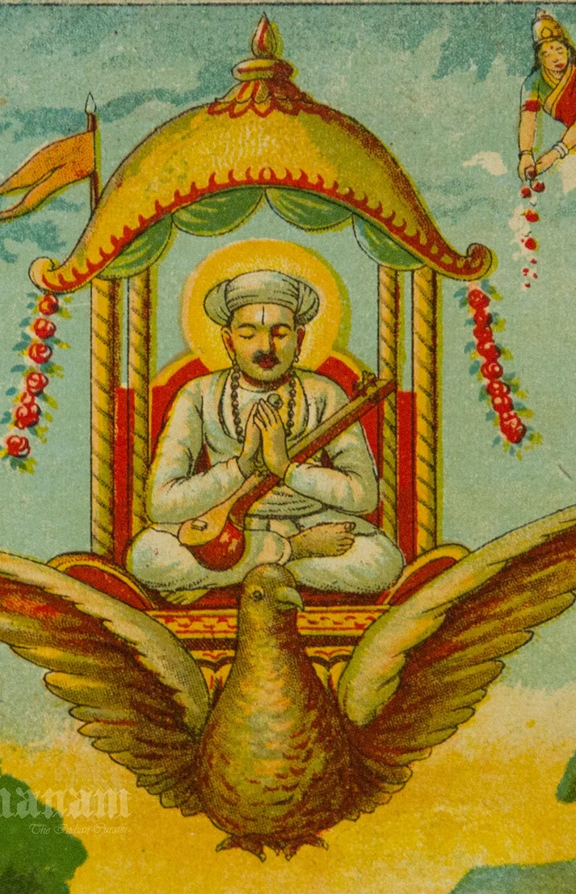
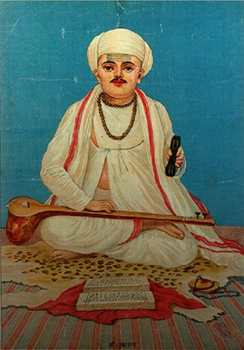
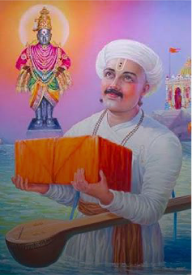
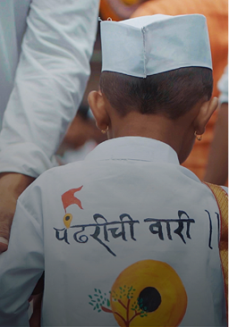
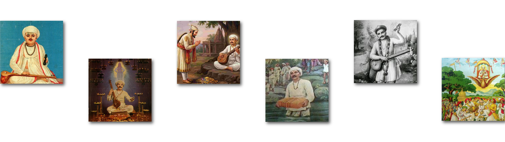

Tukaram is said to have left for Vaikuntha, abode of Vishnu (identified with Vithoba) at the end of his earthly life.

Affectionately known as Tuka, Tukobaraya, or Tukoba, was one of Maharashtra's most revered saints and a leading figure of the Warkari tradition in the 17th century. Born as Tukaram Bolhoba Ambile at Dehu, Pune. he dedicated his life to the devotion of Lord Vitthal, expressing his spiritual wisdom through heartfelt abhangs. His teachings transcended caste and social divisions, emphasizing equality, love, and unwavering faith—values that continue to guide millions of devotees today.

His progressive teachings infuriated orthodox religious leaders. Brahmin pressured him to drown his poetry in the river. Tukaram sat in deep meditation for thirteen days, and when he emerged, his palm-leaf manuscripts were found perfectly intact, floating on the water.

The Pandharpur Wari is an 800-year-old pilgrimage and one of Maharashtra's most cherished spiritual traditions. The practice of carrying the saints' paduka (sandals) in decorated palanquins was started in 1685 by Sant Tukaram's youngest son, Narayan Maharaj.
